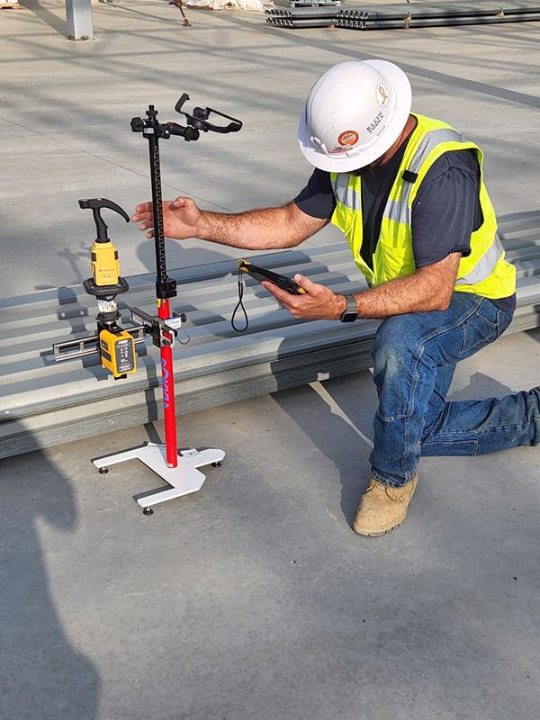

GridSure AI is an AI-powered, cloud-native setting-out assurance and spatial verification platform for UK construction, groundworks and infrastructure. It detects coordinate errors, predicts tolerance drift, and verifies physical site markings in real time protecting SME subcontractors' margins and eliminating structural rework before concrete is poured.
UK subcontractors face an operationally critical bottleneck: converting digital CAD and BIM data into accurate physical site execution. The Get It Right Initiative (GIRI) reports £10–£25 billion lost annually to avoidable errors 10–21% of total industry output. GridSure AI is the predictive spatial quality gate that turns raw coordinate data into a verified, audit-ready site execution layer protecting margins, accelerating handovers, and eliminating structural rework before it happens.
GridSure AI combines AI Setting-Out Assurance, Tolerance Drift Monitoring, Site-Mark Vision AI, Revision-Sensitive Verification, Golden Thread Compliance, and Carbon Rework Intelligence into one unified B2B SaaS platform—delivering predictive spatial verification without proprietary hardware or complex IT infrastructure.
Automatically analyses raw coordinate tables and CAD files to reveal geometric conflicts, mathematical outliers, or drafting discrepancies before layout markers are staked.
Collects spatial coordinate patterns from layout clusters to identify systematic directional biases before they cascade into structural misalignment across gridlines.
Computer vision automatically digitises, classifies and verifies hand-marked survey stakes from smartphone photographs.
Automatically checks active setting-out activities against the latest approved drawing revisions.
Creates structured digital records supporting quality assurance, traceability and audit-ready compliance.
Connects setting-out accuracy with material waste reduction and operational efficiency.
Moves beyond passive defect recording to an active spatial verification layer that screens every coordinate upload before physical execution preventing rework rather than logging it after the fact.
Captures a unique project layout fingerprint for each site linking grid coordinates, piling tolerances, and instrument calibration trends building a proprietary UK-specific spatial intelligence asset.
Converts millimetre-level deviations into real monetary savings showing subcontractors exactly how much concrete waste, steel rework, and plant-hire delay each error would have cost, protecting razor-thin 3–4% margins.
Zero proprietary hardware required. Site teams use standard total stations and smartphone cameras enabling immediate, low-friction adoption across SME groundwork, piling, and concrete subcontractors.
Translates geometric deviations into avoided CO₂ volumes helping UK contractors demonstrate concrete waste reduction, net-zero compliance, and ESG accountability to developers and insurers.
Tiered SaaS pricing gives independent site engineers and regional subcontractors enterprise-grade spatial verification without the cost of Leica ConX hardware or Autodesk multi-seat licensing.
GridSure AI is a UK-based B2B SaaS ConTech venture founded by Saroj Pandey combining deep hands-on UK site engineering expertise with advanced postgraduate business management training to solve the most pressing challenge facing UK construction subcontractors: the "Accuracy Gap" that turns millimetre-level setting-out errors into catastrophic structural rework, costing the industry £10–£25 billion per year.
A future where the physical execution of every construction site perfectly matches the digital intent of the design with no setting-out errors, structurally bulletproof foundations, and sustainably developed, waste-free buildings. GridSure AI is the AI-powered spatial platform that makes this vision a commercially viable, everyday reality for UK SME subcontractors.
To empower UK construction contractors, site engineers, and regional developers to predict, prevent, and reduce spatial setting-out errors through intelligent data pipelines, advanced mobile computer vision, and automated tolerance analytics protecting builders' profit margins, accelerating project handovers, and eliminating structural rework on physical sites.
A constant dedication to mathematical and spatial integrity. No coordinate transformation errors. No cumulative tolerance drift on live construction sites. Every millimetre validated before physical execution begins.
Continuous optimisation of GridSure AI's spatial engines, computer vision models, and drawing-to-site verification pipelines to keep pace with the evolution of CAD/BIM structures and mobile capture technology.
Making complex coordinate, gridline, and revision compliance checks instantly accessible through intuitive, low-friction, mobile-friendly interfaces on active, fast-paced jobsites without specialist IT overhead.
Empowering subcontractors to own, verify, and store their physical layout data as an immutable, defensible, and audit-ready business asset providing a reliable digital audit trail for third-party handovers.
Offering SME groundwork, piling, and concrete subcontractors advanced quality-assurance tools that enable them to execute layouts with perfection and protect margins without headcount-proportional complexity.
Preventing structural rework reduces avoidable CO₂ emissions, eliminates unnecessary demolition waste, and helps UK contractors demonstrate true sustainability directly supporting the UK's Net Zero construction goals.
Saroj brings hands-on UK civil engineering and structural setting-out expertise, having personally executed high-precision layouts using Robotic Total Stations (Leica TS16), managed continuous flight auger piling, concrete reinforcement quality control, and structural steel bolt layouts across challenging UK developments. His MSc in Management with Project Management from BPP University London, combined with a Civil Engineering degree from Pokhara University, gives him a uniquely powerful blend of technical field credibility and commercial SaaS strategic capability.
GridSure AI is currently in its product development and validation phase, with technology development focused on building a reliable, cloud-native platform for construction setting-out assurance, spatial verification, and tolerance control.
The platform combines coordinate auditing, CAD/BIM validation, computer vision, and automated quality-assurance workflows to help contractors identify and prevent setting-out errors before they result in costly rework, project delays, and compliance risks.
As the business scales, GridSure AI will expand its technical leadership team to support platform engineering, AI model development, cloud infrastructure, cybersecurity, and enterprise integrations while maintaining a strong focus on accuracy, reliability, and compliance with UK construction standards.
Every feature is built specifically for the high-precision UK SME construction environment not retrofitted from generic document management tools. Our proprietary AI Setting-Out Assurance Engine and Tolerance Drift Monitoring System translate complex coordinate mathematics and drawing relationships into actionable, compliance-ready insights that subcontractors actually need on live jobsites.
Automatically analyses raw coordinate tables and CAD files to cross-correlate and reveal geometric conflicts, mathematical outliers, and drafting discrepancies before layout markers are staked on site.
Aggregates spatial coordinate patterns from on-site layout clusters to detect small systematic directional biases such as uncalibrated robotic total stations that pass individual checks but degrade structural grid lines.
Advanced mobile computer vision automatically processes, digitises, and classifies hand-marked survey stakes from standard smartphone photos enabling direct comparison of physical realities with digital design registries.
Automatically syncs with live Common Data Environments (CDEs) to instantly alert field engineers if they are setting out from outdated or superseded drawing revisions.
Converts layout-accuracy failure risks into the volume of concrete, steel reinforcement, and earthworks fuel that would be wasted on rework translating geometric deviations into tonnes of CO₂-equivalent avoided.
Organises and indexes timestamped, certified setting-out reports creating an immutable digital ledger fully compliant with the UK Building Safety Act 2022 and structural audit guidelines.
GridSure AI is the only platform combining predictive pre-pour coordinate auditing, automated tolerance drift detection, UK-specific structural compliance, and mobile computer vision site-mark verification in a single SME-optimised SaaS with no proprietary hardware required.
| Feature / Capability | Leica ConX / Trimble Connect | Autodesk Construction Cloud | Fieldwire | Manual Methods | GridSure AI |
|---|---|---|---|---|---|
| AI-Driven Coordinate Auditing | Manual CAD loading | Passive file storage | Manual check-offs | Manual calculations | ✓ Multi-format coordinate deconstruction |
| Predictive Tolerance Drift Prevention | Points in isolation only | No | No | No | ✓ Aggregates clusters, detects bias |
| UK British Standards Calibration | Generic global math | Generic workflows | No | Hand-calculated | ✓ BS 5964, BS EN 1090, NHBC |
| Material Waste & Carbon Estimating | No | No | No | No | ✓ Converts errors to CO₂ & cost |
| Multi-Modal Data (Peg Photos + CAD) | Total station files only | CAD/BIM only | Manual uploads only | Paper sketches | ✓ DWG, CSV, smartphone peg photos |
| Golden Thread / BSR Compliance | No | Basic document logs | Simple PDF export | Manual paper QA | ✓ Auto timestamped compliance certs |
| Hardware Requirement | Multi-£K proprietary hardware | Complex IT overhead | General mobile | Paper-based | ✓ Zero standard phone & total station |
| SME Affordability | High CAPEX + annual fees | High seat-based SaaS | Tiered user SaaS | High labour cost | ✓ From £50/month, pay-per-project |
The UK construction and civil engineering industry generates over £144 billion annually and employs approximately 9% of the total UK workforce. GridSure AI targets the high-volume, highly fragmented SME subcontractor segment groundworks, piling, concrete frame, and drainage specialists who execute physical site layouts and carry the greatest exposure to setting-out errors, with rework costs averaging £4,000–£6,000 per structural phase.
Target addressable market share across UK construction regions for SME subcontractors
Primary error sources driving structural rework costs across UK subcontractors (GIRI 2024)
Platform capabilities vs existing market alternatives across key spatial verification dimensions
Global market growth (USD B) + UK regulatory-driven adoption trajectory (%)
Capability scores across key spatial verification intelligence dimensions (out of 100)
GridSure AI operates as a closed-loop spatial quality lifecycle—ingesting, verifying, monitoring, alerting, reporting, and continuously improving construction layout intelligence. Every setting-out decision is supported by predictive verification rather than reactive surveying after costly rework has already occurred.
GridSure AI ingests DWG, DXF, BIM, PDF and coordinate schedule files to create a complete digital representation of each active project. The platform automatically interprets structural geometry, coordinate relationships and revision history.
This creates the baseline intelligence layer required to identify potential setting-out risks before layout activities begin on site.
The AI Setting-Out Assurance Engine automatically analyses uploaded coordinate schedules and design information to identify conflicts, mathematical inconsistencies, transformation issues and alignment risks.
Rather than relying solely on manual review, project teams receive immediate visibility into potential setting-out errors before they reach the field.
GridSure AI continuously evaluates layout data to identify systematic directional drift, equipment calibration issues and cumulative deviations that may not be visible through isolated checks.
Early detection allows project teams to correct issues before they escalate into costly structural misalignment and rework.

Engineers capture photographs of physical site markings using standard mobile devices. GridSure AI compares field conditions against approved design information and verifies whether the latest revision is being used.
This reduces the risk of layout work being completed using superseded drawings or incorrect coordinate references.
GridSure AI continuously improves through anonymised operational insights and benchmarking mechanisms designed to strengthen predictive verification accuracy across future projects.
This helps improve risk identification and enables ongoing refinement of spatial quality-assurance workflows.
Verification activities, layout reviews and project records are organised into structured reports that support quality management, project governance and compliance workflows.
Project teams gain a clear digital record of verification activities, improving transparency and supporting future audits and handovers.
Everything you need to know about GridSure AI and what it means for your subcontracting firm's setting-out accuracy, structural compliance, and rework cost reduction.
GridSure AI is purpose-built for the cost-conscious UK subcontracting market. A single avoided rework incident typically saves £10,000–£25,000 far exceeding the annual cost of any subscription tier. Our flexible pricing model scales from independent site engineers to multi-site enterprise contractors.
Manual + AI coordinate verification for independent site engineers and freelance surveyors conducting setting-out activities on active UK developments.
Predictive spatial intelligence for mid-sized regional groundwork, piling, and concrete frame subcontractors managing active UK construction sites.
Full enterprise spatial assurance for multi-site frame subcontractors, regional developers, and structural engineering consultants requiring complete audit governance.
Technical configuration and licensing of secure data-integration bridges to sync field-captured coordinates and total station outputs with cloud-native design registries.
Custom local coordinate system calibrations, database onboarding, workflow training packages, and site-specific tolerance profile configuration for new project starts.
Our personalised demos show your project's actual coordinate audit results, live tolerance drift monitoring, and Golden Thread compliance certificate using your real site data, not generic examples. We demonstrate exactly how the platform reduces layout rework and delivers measurable ROI within 8 to 12 weeks of pilot deployment.
Fill in your details and our Site Assurance team will contact you within 24 hours to arrange a personalised demonstration.
Our personalised demos show your project's actual coordinate risk profile, live tolerance drift monitoring dashboard, mobile peg verification workflow, and compliance audit trail using your real site data and coordinate schedules, not generic examples. We demonstrate how the AI Setting-Out Assurance Engine, Tolerance Drift Monitoring System, and Golden Thread Compliance Ledger work together to eliminate layout rework, protect your margins, and satisfy Building Safety Act audit requirements in real time.